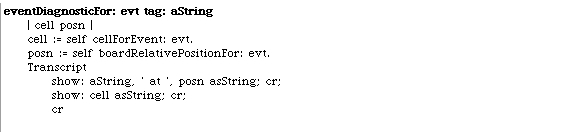
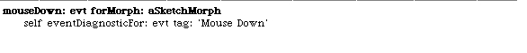
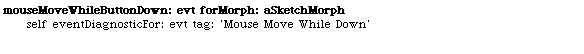
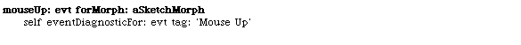
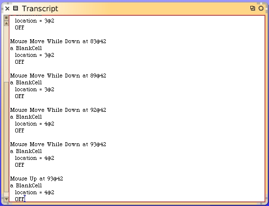

Click And Rotate A Cell
We know how to rotate a mirror cell and we have arrow hints appearing on a mirror cell to show the user the kinds of actions they may perform. What we need to do next is permit the user to rotate the mirror cell when it gets clicked.
The first thing to realize is that we want to to act when the mouse button is released. Clicking down over a mirror cell, and not releasing, could with some enhancements in our code draw the mirror cell pushed-in a little bit. But it should not rotate until the user has let go of the mouse click and only while it's still over the same cell.
Just like we did when we worked on the hints code, we should begin by just detecting the event and logging it to the Transcript. Then we'll deal with actually rotating the cell afterwards.
Add the following instance method to the LaserGame class.
With this we can capture information about mouse events. Change these methods to use the new method. We will leave the other mouse event methods alone since they appear to be working as we expected. These diagnostics are to help us to understand what we can do with the other mouse events.


Open up the Transcript window and make sure you have the LaserGame morph open. Click in some of the cells, release in cells and hold the button down while moving around and observe what gets logged.
For the example shown here, the last few entries in the Transcript show a concept we will have to incorporate into our design. There are some "Mouse Move While Down" events that were logged near the end of the sequence. They all took place while the mouse changed from the cell at grid location 3@2 to the location 4@2. The mouse up event was for the cell at 4@2.
If the user clicked-down over a cell, say the one at grid location 3@2, and then while the mouse was still down moved over to the cell at location 4@2 and then let go of the button, I don't think they expected the cell at location 4@2 to get activated. In fact a common user interface convention is that if you exit the cell you click-down on while still holding the button, you expect the click to be ignored.
We'll need a solution for that. From looking over what gets logged it's really obvious that the only events we need to concern ourselves with for mouse clicks are the initial mouse-down and mouse-up. We could save the detected cell location when we first get a mouse-down and then compare it to the mouse location when we get a mouse-up. If they are the same then we can go ahead and process the mouse click. If they do not match, we can ignore the click.